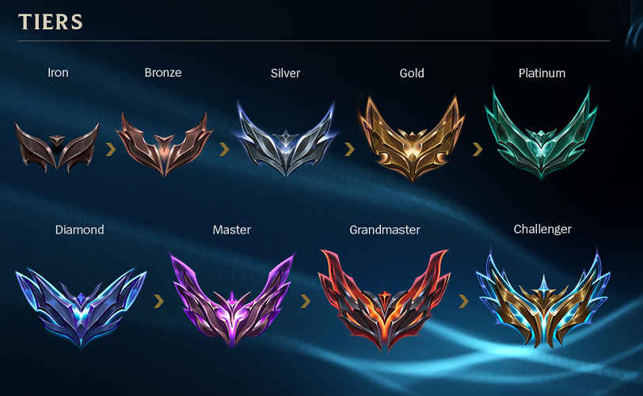
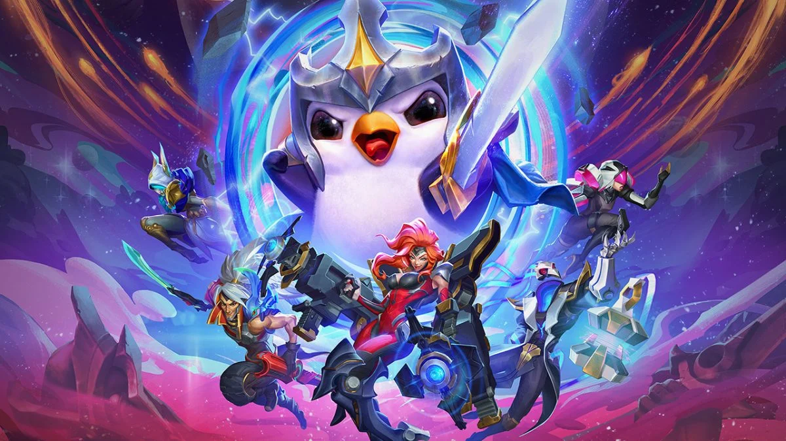

Witaj na stronie głównej
LEAGUE OF LEGENDS
League of Legends (LoL) jest popularną, wieloosobową grą online wideo, stworzoną przez firmę Riot Games. Jest to gra z gatunku MOBA (Multiplayer Online Battle Arena), w której dwie drużyny składające się z pięciu graczy rywalizują ze sobą na wirtualnej arenie, zwanej Summoner's Rift. Celem gry jest zniszczenie struktury przeciwnika, zwanego Nexus, znajdującego się w ich bazie. Gracze wybierają postacie, nazywane bohaterami lub championami, z różnych klas i stylów rozgrywki. Każdy bohater ma unikalne umiejętności i role w drużynie, takie jak magowie, zabójcy, strzelcy czy wojownicy. Gra oferuje ogromną różnorodność bohaterów, co pozwala na tworzenie zróżnicowanych strategii i tzw. kompozycji drużynowych. Rozgrywka w League of Legends to dynamiczne starcia pomiędzy dwoma drużynami na trzech głównych trasach na Summoner's Rift: górnej, środkowej i dolnej. Celem jest zdobywanie złota, doświadczenia i innych zasobów, które umożliwiają ulepszanie bohatera w trakcie gry. Gracze walczą ze sobą, eliminując przeciwników, wykonywując taktyczne manewry i podejmując decyzje strategiczne. W trakcie rozgrywki gracze mogą kupować przedmioty, które dodają statystyki i umiejętności ich bohaterom, co wpływa na ich siłę i skuteczność w walce. Oprócz głównej mapy, Summoner's Rift, istnieją również inne tryby gry, takie jak ARAM (All Random All Mid), gdzie gracze walczą na jednej trasie.
W League of Legends istnieje system rang, który ma na celu klasyfikację graczy na podstawie ich umiejętności i wyników w rozgrywkach rankingowych. System ten nazywa się League system, a gracze są przydzielani do różnych dywizji i lig, w zależności od swoich osiągnięć. Podstawą systemu rang w LoLu są gry rankingowe, w których gracze rywalizują ze sobą, starając się wygrywać, aby zdobywać punkty ligowe (League Points - LP). Za wygraną otrzymuje się punkty, a za przegraną traci się część punktów. Liczba zdobytych punktów LP zależy od wielu czynników, takich jak umiejętności przeciwników i indywidualne osiągnięcia w meczu. Gdy gracz zbierze odpowiednią liczbę punktów LP, awansuje do kolejnej dywizji lub ligi. System dywizji jest hierarchiczny i składa się z kilku poziomów. Początkowo gracze rozpoczynają od dywizji Iron, a następnie przechodzą przez dywizje Bronze, Silver, Gold, Platinum, Diamond, Master, Grandmaster i Challenger (od najniższego do najwyższego).


OPIS PATCHA 13.10
W aktualizacji śródsezonowej skupiamy się na podstawowych problemach z obecnym stanem gry. Chodzi głównie o przedmioty dla prowadzących i wspierających, problematyczne przedmioty dla zabójców i o to, jak rozgrywany jest wczesny etap gry. Mamy również porcję poprawek dla ARAM-u, rotację sklepu mitycznego i kilka nowych skórek Śnieżnego Księżyca. A zatem, nie przedłużając… oto patch śródsezonowy!
-
Akshan to pierwszy z grupy bohaterów, którzy spełniają dwa kryteria: Ostrze Gniewu Guinsoo jest w jego przypadku godne rozważenia (a przedmiot zapewnia teraz moc umiejętności) i Zbuntowany Strażnik nie skaluje się z mocą umiejętności. Nowe skalowanie z mocą umiejętności sprawi, że Akshan uzyska przydatne korzyści po zakupie przedmiotu, więc moc umiejętności nie jest w jego przypadku marnowana.
Kalista to druga bohaterka w tym patchu, która nie skaluje się z mocą umiejętności, ale może śmiało kupować Ostrze Gniewu Guinsoo. Dostosowujemy wartości w taki sposób, aby zestawy przedmiotów skupione na mocy umiejętności nie były zbyt potężne. Jednocześnie sprawiamy, że zakup Wzmacniającej Księgi da jej jakieś korzyści.
Neeko w dżungli jest bardzo popularna od czasu swojej przeróbki, ale wypada najsłabiej, jeśli chodzi o kombinację regularnie granej roli/bohatera w grze. Wzmacniamy jej szybkość czyszczenia dżungli, aby gracze Neeko mieli równe szanse. Prawdopodobnie będziemy musieli przeanalizować dżunglę bohaterki, gdy gracze przystosują się do gry nią w tej roli. Zamierzamy bacznie obserwować tego kameleona.
TEAMFIGHT TACTIC
TFT, czyli Teamfight Tactics, jest autonomiczną grą strategiczną opartą na rozszerzeniu League of Legends o tej samej nazwie. Jest to gra z gatunku Auto Battler, w której gracze rywalizują ze sobą, tworząc i kontrolując drużyny bohaterów w dynamicznych bitwach. W Teamfight Tactics gracze budują swoje drużyny, zwane kompozycjami, składającą się z różnych bohaterów, znanych jako "championi". Championi pochodzą z uniwersum League of Legends i mają unikalne umiejętności oraz statystyki. Celem gry jest pokonanie przeciwników poprzez taktyczne ustawienie swoich bohaterów i strategie. Rozgrywka w TFT składa się z rund, w których gracze wybierają i ulepszają swoje bohaterów, zarządzają złotem, kupują i sprzedają championów oraz umieszczają ich na planszy. Bitwy są automatyczne i toczy się je pomiędzy drużynami, które zostały ustalone przed rozpoczęciem rundy. Gracze mogą wpływać na rozgrywkę poprzez taktyczne umieszczenie bohaterów, zmianę strategii i zakup nowych championów. W Teamfight Tactics istnieje wiele elementów strategii, które gracze mogą wykorzystać. Mogą tworzyć synergiczne zestawienia bohaterów, które wzmacniają się nawzajem, korzystać z przedmiotów, które zwiększają siłę bohaterów, i dostosowywać swoją taktykę do zmieniających się warunków w grze.
